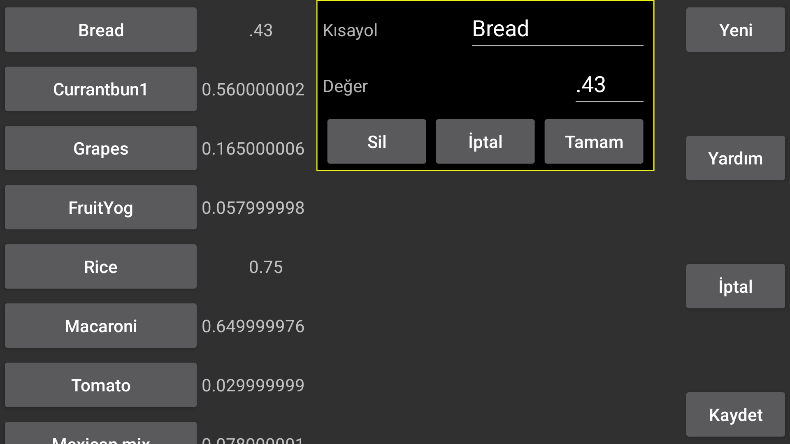

be de es fr it nl pl pt ru tr uk zh en
Kısayollar Kerfstok’ta kullanılabilir.
Saatteki sayı girişi ekranından kısayollar ekranına ulaşabilirsiniz (benim Vivoactive 3 saatimde sola kaydırarak). Burada bir etiket listesi görürsünüz, bunlardan birine basmak sayı ekranına karşılık gelen bir değer ekler. Değerler sayılar veya sayılarla kombinasyon halinde aritmetik operatörler olabilir, örneğin 0,5 ile çarpmak için *0,5.
Ayarlar menüsünden bu kısayolları oluşturabilir, kaldırabilir ve düzenleyebilirsiniz.
Liste, Mevcut kısayolların listesi sol tarafta görüntülenir, bunlardan birine dokunduğunuzda kısayolu silebileceğiniz, etiketini ve değerini değiştirebileceğiniz bir ekran açılır.
Yeni bir kısayol Yeni ile oluşturulur.
Değişiklikler yalnızca Kaydet düğmesine basıldıktan sonra kaydedilir.